കേരളത്തിന്റെ മനോോഹാരിിത വർണ്ണിിക്കുന്ന വള്ളത്്തതോൾ നാരായണമേനോോന്റെ
കവിിതാശകലം ശ്രദ്ധിിക്കൂ.
കിിഴക്ക് ഉയർന്നുനിി
ൽക്കുന്ന മലനിിരകൾ, അതിിൽ നിന്ന്് ഒഴുകിയെ
ത്തുുന്ന നിിരവധിി
പുുഴകൾ, ഓളപ്പരപ്പിിലൂടെ വഞ്ചികൾ ഒഴുകിനീങ്ങുുന്ന കായലുകൾ, പടിിഞ്ഞാറ്്
നീണ്ടുുപരന്ന്് കിടക്കുന്ന കടൽത്ീരം, വയലുകൾ, സമതലപ്രദേശങ്ങൾ..... എങ്്ങുുംും
പച്ചപ്പ്്, സുുഖകരമായ കാലാവസ്ഥ. നമ്മുടെ കേരളം എത്ര സുുന്ദരമാണ്്!
നിങ്ങൾ താമസിിക്കുന്ന പ്രദേശത്ത്് ഇത്തരത്തിലുുളള സ്ഥലങ്ങൾ, കുന്നുകൾ,
കടൽത്ീരങ്ങൾ, ജലാശയങ്ങൾ തുടങ്ങിിയ സവിശേഷതകളുണ്്ടടോ? വൈവിധ്്യമാർന്ന
ഭൂൂസവിശേഷതകൾ ഉൾക്്കകൊള്ളുുന്നതാണ്് കേരളത്തിന്റെ ഭൂൂപ്രകൃതിി.
8
പച്ചയാം വിരിപ്ിട്ട സഹ്്യനിൽ തല വെച്്ചും
പച്ചയാം വിരിപ്ിട്ട സഹ്്യനിൽ തല വെച്്ചും
സ്വച്ാബ്ധിമണൽ ത്തിട്്ടാാംാം പാദോോപധാനം പൂണ്്ടുുംും
സ്വച്ാബ്ധിമണൽ ത്തിട്്ടാാംാം പാദോോപധാനം പൂണ്്ടുുംും
പള്ളികൊsൊണ്ടീടുുന്ന നിൻ പാർശ്്വയുുഗ്മത്തെക്ാത്തുു-
പള്ളികൊsൊണ്ടീടുുന്ന നിൻ പാർശ്്വയുുഗ്മത്തെക്ാത്തുു-
കൊsൊള്ളുന്നുു, കുുമാരിയുും ഗോോuോകർണ്ണേശനുുമമ്മേ
കൊsൊള്ളുന്നുു, കുുമാരിയുും ഗോോuോകർണ്ണേശനുുമമ്മേ
മാതൃവന്ദനം – വള്ളത്്തതോൾ നാരായണമേനോ�ോൻ
മാതൃവന്ദനം – വള്ളത്്തതോൾ നാരായണമേനോ�ോൻ
നാടറിയാം
Page 29

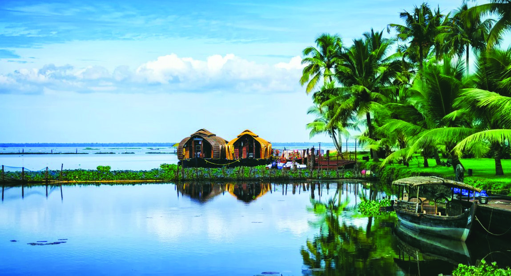
Page 30
134
സാമൂഹ്്യശാസ്ത്രം ക്ാസ് V
ഇനിി നമുുക്ക് കേരളത്തിലെ ഒരുു ഗ്രാമപഞ്ചായത്തിന്റെ രൂൂപരേഖ നിിരീക്ഷിിക്്കാാം.
കുന്നുക
ളുും നിിരപ്പാർന്ന പ്രദേശങ്ങളുും ഉൾപ്പെടുു
ന്ന ഭൂൂപ്രകൃതിിയാണ്്
വാണിിയംകുകുളത്തിനുുള്ളത്്. രൂൂപരേഖയിിൽ കാണുുന്ന പ്രധാന നദിി ഏതാണ്്?
.................................................
വാണിിയംകുകുളം ഗ്രാമപഞ്ചായത്തിന്റെ തെക്കേ അതിിർത്തിയിിലൂടെയാണ്് ഭാരതപ്പുുഴ
ഒഴുകുകുന്നത്്.
ഭാരതപ്പുുഴയ്കക് സമാന്തരമായിി കടന്നുപോ�ോകുകുന്ന പ്രധാന ഗതാഗത മാർഗമേതാണ്്?
.................................................
പഞ്ചായത്തിന്റെ ഭൂൂരിിഭാഗം പ്രദേശങ്ങളുും ഭാരതപ്പുുഴയുടെ നീർത്തടങ്ങളാണ്്.
ജലഗതാഗതം, മത്സ്യബന്ധനം എന്നിിവയ്ക്കായിി പുുഴയെ
പ്രയോ�ോജനപ്പെടുുത്തുന്നുു.
പുുഴയുടെ തീരത്്തതോട്് ചേർന്ന വളക്കൂറുുളള മണ്ണ്് കാർഷികാഭിിവൃദ്ധിിക്ക് കാരണമാകുന്നുു.
തോ�ോത്് പ്രകാരമല്ല
ജില്ലാ അതിിർത്തി
പഞ്ചായത്ത്് അതിിർത്തി
റെയിിൽ പാത
നദിി
സൂചിക
ചിത്രംിത്രം - 1
അവലംബം : വാണിിയംകുകുളം പഞ്ചായത്ത്് വിിജ്ഞാനീയം, 2001
വാാണിിയംകുുളം ഗ്രാാമപഞ്ചാായത്തിിലെ�
കൃഷിിി, ജനങ്ങളുുടെ ഭക്ഷണരീതിിി, ഗതാാഗതം
മുുുതലാായവയെ� ഭാാരതപ്പുുുഴ എങ്ങനെയെ�ല്ലാംDZ സ്വാ�ധീനിിക്കുുന്നുുു? ചർച്ചചെ�യ്യൂൂൂ.
•
ഭാാരതപ്പുുുഴയുുടെ തീരത്തെ� വളക്കൂൂറുുുള്ള മണ്ണ്്് കൃഷിിക്ക്്് അനുുയോ�ോജ്യയമാാണ്്്.
•
•
Page 31
135
നാടറിയാം
നിങ്ങളുടെ പ്രദേശത്തിന്റെ ഭൂൂമിിശാസ്ത്ര സവിശേഷതകൾ ചർച്ചചെയ്തല്്ലലോലോ. ഇതുപോ�ോലെ
യാണോ�ോ നമ്മുടെ സംസ്ഥാന
ത്തിന്റെ ഭൂൂപ്രകൃതിി സവിശേഷതകൾ?
കേരളത്തിന്റെ ഭൂൂപ്രകൃതിി, മണ്ണ്്, ജലം, കാലാവസ്ഥ, വിിളകൾ എന്നിിവയെക്കുറിച്്ചുുംും
അവ ജനജീവിിതത്തിൽ ചെലുുത്തുുന്ന സ്്വവാധീനത്തെക്കുറിച്്ചുുംും ഒരന്്വവേഷണമായാലോ�ോ?
നിിങ്ങളുുടെ നാാട്ടിിലെ� കൃഷിിയുംം� മറ്റ്്് തൊ�ൊഴിിലുുകളും�ം ഭൂൂമിിശാാസ്ത്ര സവിിശേ�ഷതകളുുമാായിിി
ബന്ധപ്പെ�ട്ടതല്ലേ�? നൽകിിയിിട്ടുുുള്ള സൂൂചകങ്ങളുുടെ അടിിസ്ഥാാനത്തിിിൽ
പരിിശോ�ോധിിക്കൂൂൂ. ടീച്ചറുുടെ സഹാായംകൂൂടിിി തേ�ടുുുമല്ലോ�ോ.
•
കാാലാാവസ്ഥ
•
ജലാാശയങ്ങൾ
•
നിിിരപ്പാായ പ്രദേ�ശങ്ങൾ
•
മലയോ�ോര പ്രദേ�ശങ്ങൾ
•
മണ്ണിിന്റെ� വളക്കൂൂറ്്
•
ഗതാാഗതം
•
വ്യയവസാായങ്ങൾ
നിങ്ങൾ കണ്ടെത്തിയ വിിവരങ്ങളുും പ്രദേശത്തിന്റെ ഭൂൂമിിശാസ്ത്ര സവിശേഷതകളുും ഉൾപ്പെടുുത്തി
ചുുവടെ നൽകിിയിട്ടുുള്ള ശീർഷകത്തിൽ ഒരുു പ്രാദ
േശിക ഭൂൂമിിശാസ്ത്രരേഖ തയ്യാറാക്കിി
സാമൂഹ്്യശാസ്ത്ര ക്ലബിിൽ അവതരിപ്പിിക്കുക.
വാണിിയംകുകുളം ഗ്രാമപഞ്ചായത്തിന്റെ ചിില ഭൂൂമിിശാസ്ത്ര സവിശേഷതകൾ നമ്മൾ
പരിചയപ്പെട്ടല്്ലലോലോ. ഇത്തരം ഭൂൂമിിശാസ്ത്ര സവിശേഷതകൾ ആ നാടിിന്റെ ജനജീവിിതത്തെ
പല രീതികളിിലുും സ്്വവാധീനിിക്കുന്നതായിി കണ്ടില്ലേ.
നിങ്ങൾ താമസിിക്കുന്ന പ്രദേശത്തിന്റെ ഭൂൂമിിശാസ്ത്ര സവിശേഷതകൾ, അവിടത്തെ
വിിവിിധ കൃഷികൾ, തൊ�ൊഴിിലുകൾ എന്നിിവ പട്ടികപ്പെടുു
ത്തൂൂ.
•
•
•
പ്രാദ
േശിക ഭൂൂമിിശാസ്ത്രരേഖ
•
പ്രദേ�ശം/വാാർഡ്്് ഉൾപ്പെ�ടുുുന്ന
രൂൂപരേഖ
• ഭൂൂമിിശാാസ്ത്ര സവിിശേ�ഷതകൾ
•
ജനജീവിിിതത്തിിന്്് ഭൂൂമിിശാാസ്ത്ര
സവിശേഷതകളുുമായുുളള ബന്ധം
•
അഭിിമുുഖീകരിിക്കുുുന്ന പ്രശ്നങ്ങൾ
•
പരിിഹാാരനിിിർദേ�ശങ്ങൾ
Page 32
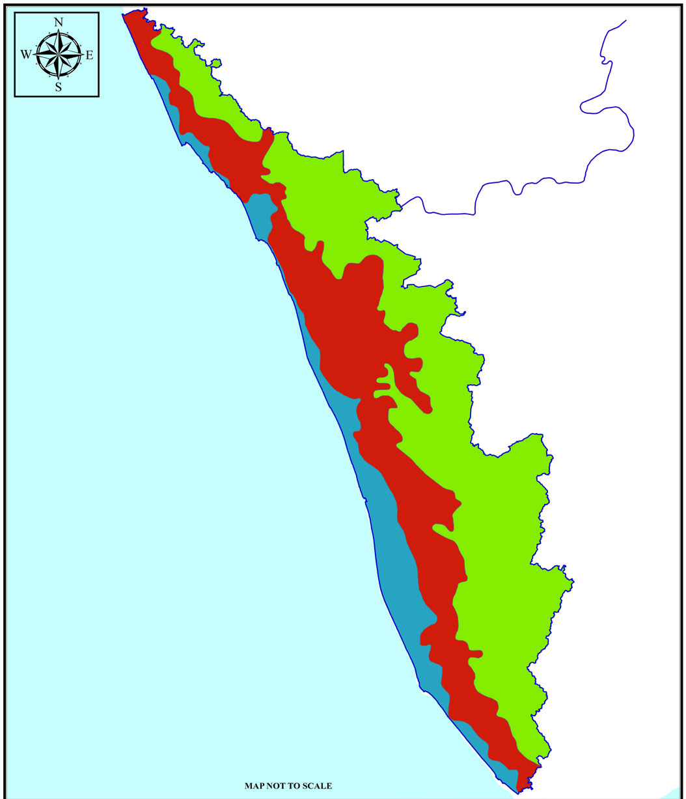
136
സാമൂഹ്്യശാസ്ത്രം ക്ാസ് V
കേരളത്തിലെ മൂന്ന്് ഭൂൂപ്രകൃതിിവിിഭാഗങ്ങൾ
ഓരോ�ോ ഭൂൂപ്രകൃതിിവിിഭാഗത്തിന്റെയുും സമുുദ്രനിിരപ്പിിൽനിന്നുുള്ള ഉയരം
ലക്ഷദ്്വവീപ്കടലിനോോട്് ചേർന്നുകിട
ക്കുന്ന കേരളത്തിലെ ഭൂൂപ്രകൃതിിവിിഭാഗം
തമിിഴ്നാട്്, കർണ്ണാടകം എന്നീ സംസ്ഥാന
അതിിർത്തികളോ�ോട്് ചേർന്ന്് സ്ഥിിതിി
ചെയ്യുുന്ന കേരളത്തിന്റെ ഭൂൂപ്രകൃതിിവിിഭാഗം
കർണ്ണാടകം
തമിിഴ്നാട്്
കേരളം
ഭൂപ്രകൃതി ഭൂപടം
ലക്ഷദ്്വവീപ്കടൽ
ചിത്രംിത്രം - 2
കേരള്തിന്റെ ഭൂപ്രകൃതി
ഭൂൂപടം നിിരീക്ഷിച്ച്് താഴെപ്പറയുുന്നവ കണ്ടെത്തി നോോട്ടുുബുുക്കിിൽ കുകുറിിക്കൂ.
ഇനിി നമുുക്ക് കേരളത്തിന്റെ ഭൂൂപ്രകൃതിിവിിഭാഗങ്ങളെക്കുറിച്ച്് കൂടുുതൽ കാര്യങ്ങൾ
പരിശോ�ോധിിക്്കാാം.
മലനാട്
കേരളത്തിന്റെ ഭൂൂപ്രകൃതിി ഭൂൂപടത്തിൽ മലനാടിിന്റെ സ്ഥാന
ം കണ്ടെത്തൂൂ. സമുുദ്രനിിരപ്പിിൽ
നിന്ന്് ഏകദേശം 75 മീറ്ററിനുു
മുകളിിൽ സ്ഥിിതിചെയ്യുുന്നതുും കുന്നുകളുും മലകളുും
പർവതവുും ഉൾപ്പെടുുന്നതുുമായ ഭൂൂപ്രകൃതിിവിിഭാഗമാണിിത്്. ഉയർന്നതോ�ോതിിൽ മഴ
ലഭിിക്കുന്നതുും പൊ�ൊതുവെ ഹരിിതാഭവുുമായ പ്രദേശമാണ്് മലനാട്്. കേരളത്തിലെ 44
നദികളുും ഉത്ഭവിിക്കുന്നത്് ഈ ഭൂൂപ്രകൃതിിവിിഭാഗത്തിൽ നിന്നാണ്്.
സൂചിക
തീരപ്രദേശം
ഇടനാട്്
മലനാട്്
7.5 മീറ്ററിിൽ താഴെ
7.5 മീറ്ററിനുു
ം - 75
മീറ്ററിനുു
ം ഇടയിിൽ
75 മീറ്ററിന്് മുകളിിൽ
MAP NOT TO SCALE
Page 33

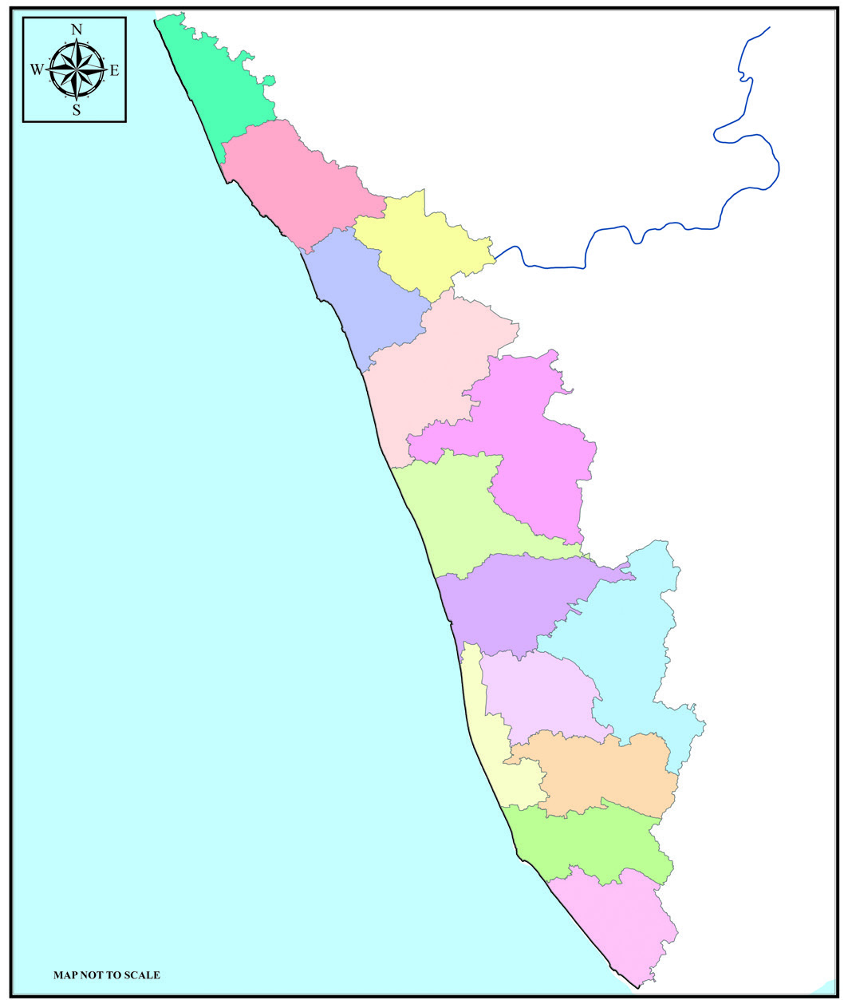
137
നാടറിയാം
തിരുവനന്തപുരം
കൊsൊല്ം
പത്തനംതിട്ട
ആലപ്ുഴ
ഇടുക്ി
എറണാകുളം
തൃശ്ശൂർ
പാലക്കാട്
കോsോഴിക്്കകോട്
മലപ്ുറം
വയനാട്
കാസർഗോോuോഡ്
കണ്ണൂൂർ
കോsോട്ടയം
കർണ്ണാടകം
തമിിഴ്നാട്്
ലക്ഷദ്്വവീപ്കടൽ
കേരളം
രാഷ്ട്രീയ ഭൂൂപടം
ഇടനാട്
പേജ്് 136-ൽ നൽകിിയിട്ടുുള്ള ഭൂൂപടത്തിൽ (ചിത്രംിത്രം 2) ഇടനാടിിന്റെ സ്ഥാന
ം കണ്ടെത്തൂൂ.
മലനാടിനുു
ം തീരപ്രദേശത്തിനുും ഇടയിിലായിി സ്ഥിിതിചെയ്യുുന്ന ഭൂൂപ്രകൃതിിവിിഭാഗമാണ്്
ഇടനാട്്. സമുുദ്രനിിരപ്പിിൽ നിന്ന്് 7.5 മീറ്റർ മുുതൽ 75 മീറ്റർ വരെയാണ്് ഈ പ്രദേശത്തിൻ്്റെ
ഉയരം. ചെറുകുന്നുക
ളുും താഴ്വരകളുും നദീതടങ്ങളുമൊ�ൊക്കെയാണ്് ഇടനാടിൻ്്റെ
സവിശേഷതകൾ.
തീരപ്രദേശം
ലക്ഷദ്്വവീപ്കടലിനോോട്് ചേർന്നുകാ
ണുുന്ന ഭൂൂപ്രകൃതിിവിിഭാഗമാണിിത്്. കടൽത്ീരത്്തതോട്്
അടുുത്തുസ്ഥിിതിചെയ്യുുന്ന ഈ പ്രദേശത്തിന്് സമുുദ്രനിിരപ്പിിൽ നിന്ന്് 7.5 മീറ്റർ
വരെയാണ്് ഉയരം.
നൽകിിയിിരിിക്കുന്ന രാഷ്ടീയഭൂൂപടത്തിന്റെ മുകളിിൽ ഒരുു ട്രേസിിങ്് പേപ്പർ വച്ച്് ജിില്ലകൾ
വരച്ചെടുുക്കൂ. അതിനുശേ
ഷം ജിില്ലകൾ വരച്ചെടുത്ത ട്രേസിിംഗ്് പേപ്പർ ചിത്രംിത്രം-2
(പേജ്് 136) ലെ കേരളത്തിന്റെ ഭൂൂപ്രകൃതിി ഭൂൂപടത്തിനുുമുകളിിൽ ശരിിയായവിിധം ക്രമീകരിച്ച്്
(സൂൂപ്പർ എമ്പ
ോസ്് ചെയ്ത്്) താഴെപറയുുന്നവ കണ്ടെത്തൂൂ.
•
ഒരോ�ോ ജിിില്ലയിിലുംം� ഉൾപ്പെ�ടുുുന്ന ഭൂൂൂപ്രകൃതിിവിിഭാാഗങ്ങൾ
•
തീരപ്രദേ�ശമുുുള്ള ജിിില്ലകൾ
•
മൂൂന്ന്്് ഭൂൂൂപ്രകൃതിിവിിഭാാഗങ്ങളും�ം ഉൾപ്പെ�ടുുുന്ന ജിിില്ലകൾ
Page 34


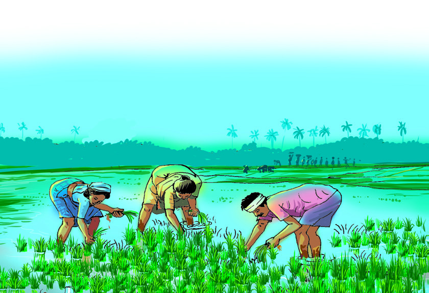
138
സാമൂഹ്്യശാസ്ത്രം ക്ാസ് V
മൺസൂൺ
കാാലത്തിിന്റെź മാാറ്റത്തിിനനുസരിിച്ച്് ഗതിിമാാറിി
വീീശുുന്ന കാാറ്റുകളാാണ്് മൺസൂൺകാാറ്റുകൾ.
ജൂൺ-സെ
പ്്റ്ററംബർ മാസങ്ങളിൽ ഭൂമധ്്യരേഖയ്ക്ക് വടക്്
ഇന്ത്യൻ സമുദ്രത്തിൽ തെക്കുപടിഞ്ഞാറ് ദിശയിൽ
നിന്്നുുംം കരയിലേക്് വീശുന്ന മഴക്കാറ്റുകളാണ്
തെക്കുപടിഞ്ഞാറൻ മൺസൂൺകാറ്റുകൾ.
കടലിൽ നിന്്നുുംം വീശുന്നതിനാൽ ഇവ ഈർപ്പ
വാഹിനികളാണ്. കരയിലേക്് പ്രവേശിക്ുന്ന
ഈ കാറ്റുകളെ
പശ്ചിമഘട്ടമലനിരകൾ തടഞ്്
നിർത്തുന്നുന്നു. ഇതിന്റെ ഫലമായി കേരളംം
ഉൾപ്പെടുന്ന
പടിഞ്ഞാറൻ തീരങ്ങളിൽ ഉയർന്ന തോ�ോതിൽ മഴ
ലഭിക്ുന്നു. ഇതാണ് തെക്കുപടിഞ്ഞാറൻ മൺസൂൺ.
കേരളത്തി
ിൽ ഈ മഴക്ാലംം 'കാലവർഷംം' എന്നറിയ
പ്പെടുന്നു.
ഒക്ടടോബർ, നവംംബർ മാസങ്ങളിൽ മൺസൂൺ
കാറ്റുകൾ നേർവിപരീതദിശയിൽ വടക്കുകിഴക്ു
നിന്്നുുംവീശുന്നു. ഈ കാറ്റുകൾ വടക്കുകിഴക്കൻ
മൺസൂൺ കാറ്റുകൾ എന്നറിയപ്പെ
ടുന്നു. ഈ
കാറ്റുകളുടെ ഒരു ഭാഗംം ബംംഗാൾ ഉൾക്കടലിന്
മുകളിലൂടെ കടന്നുപോ�ോക
ുന്നതിനാൽ ഈർപ്പ
പൂരിതമാവുകയുംം ഇന്ത്യയുടെ തെക്ക
ൻ സംംസ്ാ
നങ്ങളിൽ പലയിടങ്ങളിലുംം മഴയ്ക്ക് കാരണമ
ാവുകയുംം
ചെയ്ുന്നു. ഈ മഴക്ാലംം കേരളത്തി
ിൽ തുലാവർഷംം
എന്നറിയപ്പെടുന്നു.
കേരളത്തിന്റെ കാലാവസ്ഥ
ധാരാളംം മഴ ലഭിക്ുന്ന നാടാണ്
കേരളംം
. കേരളത്തി
ിൽ പ്രധാനമായുംം
രണ്് മഴക്ാലങ്ങളാണുള്ളത്.
•
തെ�ക്കുുപടിിഞ്ഞാറൻ
മൺസൂൺകാലംം അഥവാ
കാലവർഷംം
•
വടക്കുകിഴക്കൻ മൺസൂൺകാാലംംം
അഥവാ തുലാവർഷംം
കേരളത്തി
ിൽ ലഭിക്ുന്ന മഴയുടെ
ഭൂരിഭാഗവുംം തെക്കുപടിഞ്ഞാറൻ
മൺസൂൺ കാലത്താണ
്.
കേരളത്തിലെ
വേനൽക്ാലംം മാർച്ച്
മുതൽ മെയ് വരെ
യാണ്. ഇക്ാലത്ത്
കൂടുതൽ ചൂട് അനുഭവപ്പെ
ടുന്നു.
വേനൽക്ാലത്ത് ഇടക്കെത്തുന്ന മഴ
ചൂടിന്റെ തീവ്രതയ്ക്ക് കുറച്ച് ആശ്വാസംം
നൽകുന്നു.
കേരളത്തിലെ മണ്ണ്
മണ്ണേĴ നമ്പിിലേ�ലയ്യാ
മണ്ണേ�നമ്പിിലേ�ലയ്യാാ മരമിിരുക്ക്്്...
മരത്തെ�നമ്പിിലേ�ലയ്യാാ മണ്ണിിരുക്ക്്്...
മരത്തെ�നമ്പിിലേ�ലയ്യാാ കൊ�ൊമ്പിിരുുക്ക്്്...
കൊ�ൊമ്പെ�നമ്പിിലേ�ലയ്യാാ ഇലയിിരുുക്ക്്്...
ഇലയെ�നമ്പിിലേ�ലയ്യാാ പൂൂവിിരുക്ക്്്...
പൂൂവേ�നമ്പിിലേ�ലയ്യാാ കായിിരുുക്ക്്്...
കായേ�നമ്പിിലേ�ലയ്യാാ പഴമിിരിിിക്ക്്്...
പഴത്തേ�നമ്പിിലേ�ലയ്യാാ നാമിിരുക്ക്്്...
നമ്മേƣനമ്പിിലേ�ലയ്യാാ നാടിിരുുക്ക്്്...
അവലംംബംം: മണ്ണെĴഴുുത്ത്് 2008-2009
അട്ടപ്പാടിയിലെ� ഇരുളരുുടെെ പാട്ട്
ശ്രദ്ധിിക്കൂ. ജീവജാാലങ്ങളുടെെ നില
നില്പിിന് ജലവുംം� വായുവുംം� പോ�ോലെ�
പ്രാധാന്യയമുുള്ളതാണ്് മണ്ണ്. മണ്ണുംം�
മനുുഷ്യയരും�ംം
തമ്മിിലുള്ള
പരസ്പര
ബന്ധത്തിിലൂടെെയാാണ്് മനുുഷ്യയസംംം
സ്കാാരംംം
രൂപപ്പെ�ട്ടത്. മണ്ണില്ലെെƽങ്കിിൽ സസ്യയങ്ങ
ളില്ല, അവയെ�
ആശ്രയിക്കുന്ന ജീവി
കളുുമില്ല.
എങ്ങനെ�യാ
ാണ്് മണ്ണ് രൂപപ്പെ�ടുുന്നത്?
ഭൂമിയിൽ ജീവന്റെź നിലനില്പിിന് കാാരണ
മാായ പ്രധാനഘടകങ്ങളിലൊ�ൊന്നാാണ്് മണ്ണ്. പാറ
പൊ�ൊടി
ിഞ്ഞ് മണ്ണായിമാാറുന്ന പ്രക്രിിയ ദീർഘകാാലംംം കൊ�ൊണ്ടാാണ്് നടക്കുന്നത്. ഭൂപ്രകൃതിി,
ജവഹർലാൽ നെഹ്റുവിൻ്റെ 'ഒരച്ഛൻ മകൾക്കയച്ച കത്തുക
ൾ'
എന്ന പുസ്തകത്തിൽ മണ്ണ് ഉണ്ടാകുന്നതെങ്ങനെയെന്ന്
ന്ന്
പ്രതിപാദിക്ുന്ന ഭാഗംം വായിച്ച് ക്ാസിൽ ചർച്ചചെയ്ൂ.
Page 35
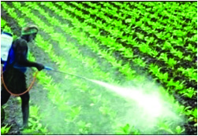
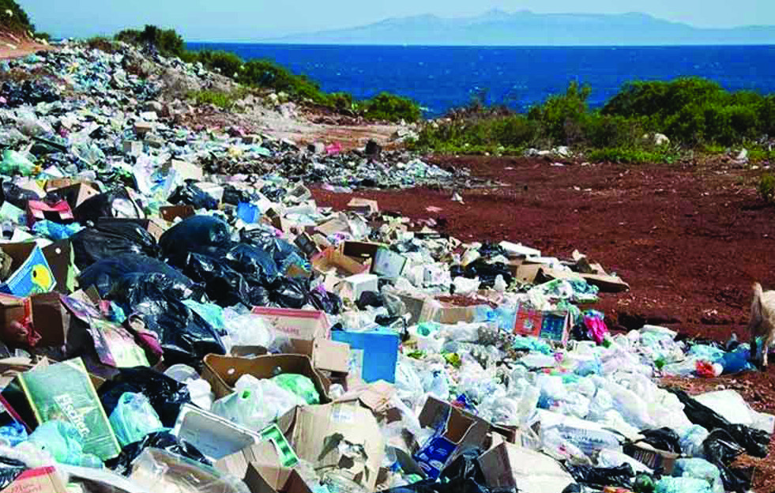


139
നാടറിയാം
കാലാവസ്ഥ, പാറയുടെ ഘടന, കാലപ്പഴക്ം, സസ്യങ്ങളുടെയുും ജന്തുക്ക
ളുടെയുും
മറ്റ് സൂൂക്്ഷ്്മ്മജീവികളുടെയുും പ്രവർത്തനം എന്നിിവ മണ്ണ്് രൂൂപപ്പെടുുന്നതിന്്
കാരണമാകുന്നുു. ഒരിിഞ്ച്് കനത്തിൽ മണ്ണ്് രൂൂപപ്പെടാൻ ആയിിരത്തിലധികം വർഷങ്ങൾ
വേണ്ടിിവരുമെന്നാണ്് കണക്കാക്കപ്പെട്ടിട്ടുുളളത്്.
പ്രധാന മണ്ണിനങ്ങളുടെ സവിശേഷതകളെക്കുറിച്ച്് കൂടുുതൽ വിിവരങ്ങൾ
ടീച്ചറുടെ സഹായത്്തതോടെ ശേഖരിച്ച്് കു
കുറിപ്പ്് തയ്യാറാക്കിി ക്ലാസിിൽ
അവതരിപ്പിിക്കൂ.
മണ്ണ്് ഉപയോ�ോഗപ്പെടുുത്തി മനുഷ്്യർ നടത്തുുന്ന വൈവിധ്്യമാർന്ന
പ്രവർത്തനങ്ങളുടെ ചിിത്രങ്ങൾ ശേഖരിച്ച്് ടീച്ചറുടെ സഹായത്്തതോടെ
ഡിിജിറ്റൽ ആൽബം തയ്യാറാക്കിി സാമൂഹ്്യശാസ്ത്ര ക്ലബിിൽ അവതരിപ്പിിക്കൂ.
ചെങ്കൽ മണ്ണ്് (Laterite Soil), ചെമ്മണ്ണ്് (Red Soil), എക്കൽമണ്ണ്് (Alluvial Soil),
വനമണ്ണ്് (Forest Soil) എന്നിിവയാണ്് കേരളത്തിലെ പ്രധാന മണ്ണിനങ്ങൾ. കറുത്ത മണ്ണ്്
(Black Soil), പീറ്റ് മണ്ണ്് (Peat Soil) എന്നിിവയുും ചിില പ്രദേശങ്ങളിിൽ കാണപ്പെടുന്നുു.
മണ്ണിിന്റെ തനത്് സവിശേഷതകളെ ദോ�ോഷകരമായിി ബാധിിക്കുന്ന ചിില സന്ദർഭങ്ങളുടെ
ചിിത്രങ്ങളാണ്് നൽകിിയിിരിിക്കുന്നത്്. കൂടുുതൽ സന്ദർഭങ്ങൾ കണ്ടെത്തി പട്ടികപ്പെടുു
ത്തൂൂ.
•
ചിിത്രങ്ങൾ നിിരീക്ഷിിക്കൂ.
അമിത രാസവള-കീടനാശിനി പ്രയോോഗം
മണ്ണിലെ പ്ാസ്റിക്് മാലിന്യങ്ങൾ
അശാസ്ത്രീയ ഖനനപ്രവർത്തനം
അശാസ്ത്രീയ കാർഷികപ്രവർത്തനങ്ങൾ
•
Page 36
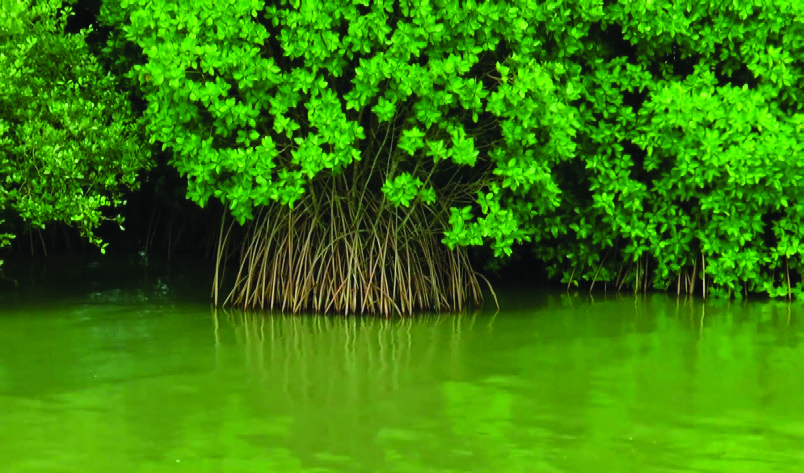
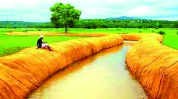


140
സാമൂഹ്്യശാസ്ത്രം ക്ാസ് V
മണ്ണുുസംരക്ഷണത്തിന്് എന്്തതൊക്കെ മാർഗങ്ങൾ സ്്വവീകരിിക്്കാാം?
മണ്ണുുസംരക്ഷണ മാർഗങ്ങളുടെ ചിിത്രങ്ങൾ നിിരീക്ഷിിക്കൂ.
കണ്ടൽക്കാടുകൾ
കയർ ഭൂൂവസ്ത്രം
കല്ലുകയ്യാല
തട്ടുുകൃഷിി
കൂടുുതൽ മാർഗങ്ങൾ കണ്ടെത്തി പട്ടിക
യാക്കൂ.
•
•
ഡിിസം
ംബർ 5 ലോ�ോക മണ്ണ്്്
സംരക്ഷണദിിനമാായിിി ഐക്യയയ
രാാഷ്ട്രസംഘടന ആചരിിക്കുുന്നുുു.
നിങ്ങളുടെ പ്രദേശത്തെ മണ്ണിനങ്ങൾ ശേഖരിച്ച്് ടീച്ചറുടെ സഹായത്്തതോടെ
അവയുടെ സവിശേഷതകൾ തിിരിിച്ചറിിഞ്ഞ്് ചാർട്ടിലെ
ഴുുതിി ക്ലാസിിൽ പ്രദർശിപ്പിിക്കൂ.
കേരള്തിന്റെ ജലസ്്ര
രോതസ്സുകൾ
മനുഷ്്യരുടെ നിിലനിില്പിന്് ഒഴിച്ചുകൂടാനാകാത്ത
ഒരുു പ്രകൃതിിവിിഭവമാണ്് ജലം.
ഭൂൂമിിയിലെ ജലത്തിന്റെ സ്ര
ോതസ്സുകൾ ഏതൊ�ൊക്കെയാണ്്?
•
പുുുഴകൾ
•
നീരുുുറവകൾ
നിങ്ങളുടെ പ്രദേശത്തെ ജലസ്ര
ോതസ്സുകൾ ഏതെല്്ലാാം?
കിിഴക്ക് സഹ്യപർവതം മുുതൽ പടിിഞ്ഞാറ്് അറബിക്കടൽ വരെ കയറ്റിിറക്കങ്ങളോ�ോടുകൂടിി
ചരിിവായിി നിിലകൊ�ൊള്ളുുന്ന ഭൂൂപ്രകൃതിിയാണ്് കേരളത്തിന്റെത്്. സഹ്യപർവതനിിരകളിിൽ
Page 37

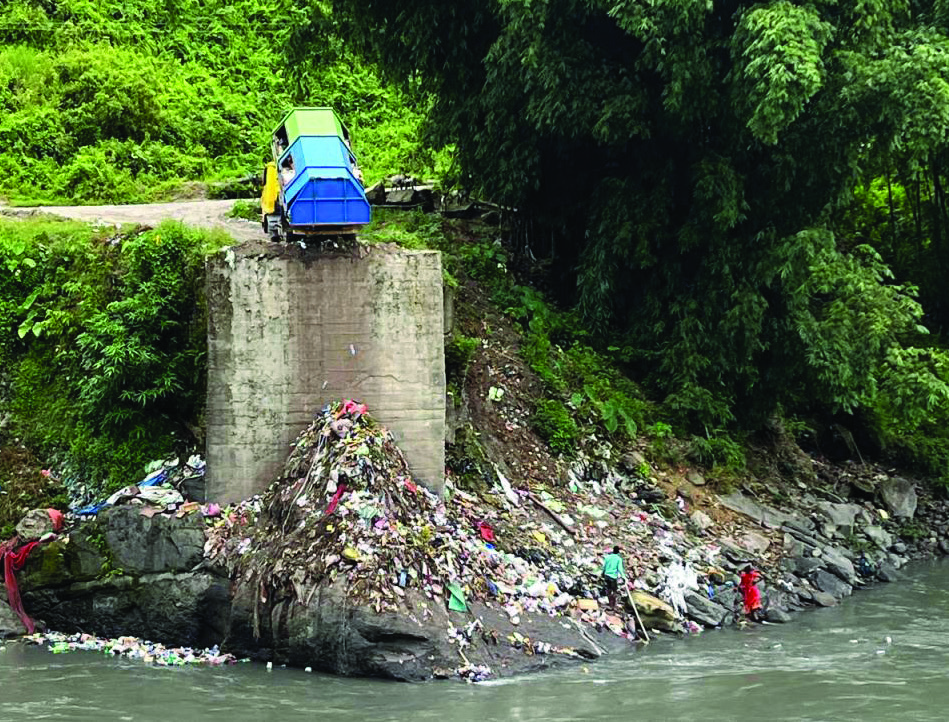
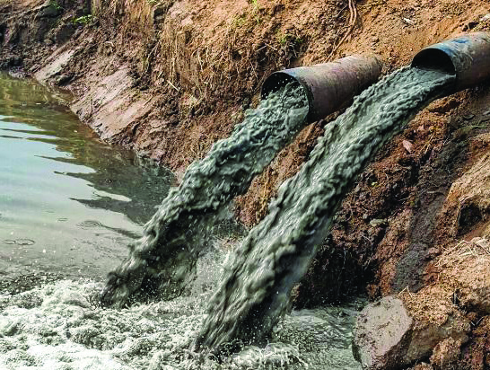

141
നാടറിയാം
നിന്നുുത്ഭവിച്ച്് കായലിലേക്്കുുംും കടലിലേക്്കുുംും ഒഴുകുകുന്ന നദികൾ കേരളത്തെ
ജലസമൃദ്ധമാക്കുന്നുു. ഇവ കൂടാതെ നിിരവധിി തടാകങ്ങളുും കു
കുളങ്ങളുും നമ്മുടെ
നാട്ടിിലുുണ്ട്്. കേരളത്തിലെ 44 നദികളുും ഉത്ഭവിിക്കുന്നത്് മലനാട്് ഭൂൂപ്രകൃതിിവിിഭാഗത്തിൽ
നിന്നാണ്്. ഇവയിിൽ 3 നദികൾ കിിഴക്്കകോട്്ടുുംും 41 നദികൾ പടിിഞ്ഞാറോ�ോട്ടുുമാണ്്
ഒഴുകുകുന്നത്്.
ജലസംരക്ഷണസന്ദേശങ്ങൾ ഉൾക്കൊള്ളുുന്ന പ്ലക്കാർഡുക
ൾ തയ്യാറാക്കിി
ജലസംരക്ഷണറാലിി സംഘടിപ്പിിക്കൂ. മഴവെ
ള്ള സംഭരണത്തിന്റെ
ആവശ്യകതയെക്കുറിച്ച്് പ്രസംഗം തയ്യാറാക്കുക.
നിങ്ങളുടെ നാട്ടിലെ
ജലാശയങ്ങൾ മലിനമാക്കപ്പെടുന്നുണ്്ടടോ? ചർച്ചചെയ്യൂൂ.
ജലാശയങ്ങളെ മലിനീകരണത്തിൽ നിന്ന്് സംരക്ഷിിക്കാൻ എന്്തതൊക്കെ
നിിർദേശങ്ങളാണ്് മുന്്നനോട്ടുു വയ്ക്കാനുുള്ളത്്?
രണ്ട്് മഴക്കാലങ്ങളിിലൂടെ നമ്മുടെ ജലാശയങ്ങൾ സ്പന്നമാകുമെങ്കിിലുും മഴക്കാലം
കഴിിയുുന്നതോ�ോടെ അവയിിൽ പലതുും വറ്റിപ്്പപോകു
കുന്നത്് ശ്രദ്ധിച്ചിട്ടില്ലേ. ഇതിിന്റെ
കാരണങ്ങൾ അന്്വവേഷിച്ച്് കണ്ടെത്തൂൂ.
ലോ�ോകത്തിലെ ആകെ ജലലഭ്യതയുടെ വളരെ ചെറിയൊ�ൊരുു അളവ്് മാത്രമെ
ശുദ്ധജലമായിട്ടുള്ളൂൂ
. അമൂല്്യമായ ശുദ്ധജലം സംരക്ഷിക്കേണ്ടത്് നാമോ�ോരോ�ോരുത്തരുടെയുും
കടമയാണ്്. മഴക്കുഴിി, മഴവെള്ളസംഭരണിി, തടയണ, പുുതയിടൽ തുടങ്ങിിയ മാർഗങ്ങൾ
ഉപയോ�ോഗിച്ച്് ജലസംരക്ഷണം ഉറപ്പുുവരുുത്താൻ കഴിിയുും.
ചിിത്രങ്ങൾ നിിരീക്ഷിിക്കൂ.
ഏതൊ�ൊക്കെ സാഹചര്യങ്ങളിിലാണ്് ജലസ്ര
ോതസ്സുകൾ മലിനമാകുകുന്നത്്?
നിിങ്ങളുുടെ സ്കൂൂളിിലെ�
സാാമൂൂഹ്യയശാാസ്ത്ര ലാാബിിലെ� കേ�രളത്തിിന്റെ� നദീഭൂൂൂപടം
നിിരീക്ഷിിച്ച്്് കിിിഴക്കോ�ോട്ടും�ം പടിിഞ്ഞാാറോ�ോട്ടും�ം ഒഴുുകുുുന്ന നദിികൾ കണ്ടെ�ത്തിിി
വേ�ർതിിരിിച്ച്്് പട്ടിികപ്പെ�ടുുത്തൂൂൂ.
Page 38
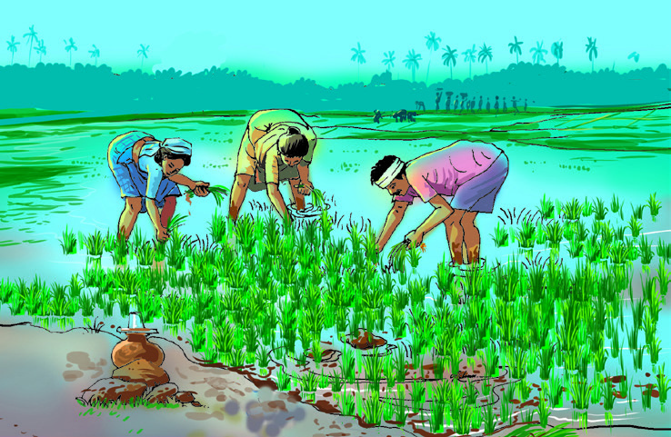

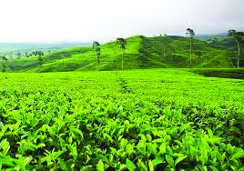
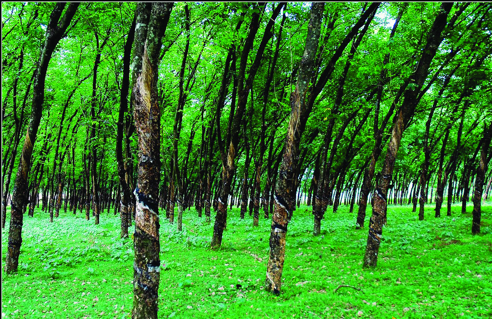
142
സാമൂഹ്്യശാസ്ത്രം ക്ാസ് V
ജലാശയങ്ങൾ മലിനപ്പെടുുന്നത്് ജീവജാലങ്ങളുടെ നിിലനിില്പ്് അപകടത്തിലാക്കുന്നുു.
നിിലവിിലുുളള ജലസ്ര
ോതസ്സുകളെ സംരക്ഷിിക്കുന്നതിനുു
ം പരിിപാലിിക്കുന്നതിനുു
ം
സർക്കാർ വിിവിിധ പദ്ധതികൾ നടപ്പിിലാക്കുന്നുുണ്ട്്. ചുുവടെ നൽകിിയിട്ടുുളള പട്ടിക
പരിശോ�ോധിിക്കൂ.
പദ്ധതി
നിർവഹണം
ഇനിി ഞാൻ ഒഴുകട്ടെ
ഹരിിതകേരളം മിിഷൻ
മാലിന്്യമുുക്ം നവകേരളം
തദ്ദേശ സ്്വയംഭരണ വകുപ്പ്്
തെളിനീരൊ�ൊഴുകുകും നവകേരളം
തദ്ദേശ സ്്വയംഭരണ വകുപ്പ്്
ജൽജീവൻ മിിഷൻ
കേന്ദ്രസർക്കാർ
ഈ പദ്ധതികളുടെ ലക്ഷഷ്യങ്ങൾ അന്്വവേഷിച്ച്് കണ്ടെത്തൂൂ.
കേരള്തിന്റെ വിളവൈവിധ്്യം
കേരളത്തിലെ വ്യത്യസ്ത പ്രദേശങ്ങളിിൽ കാണപ്പെടുുന്ന ചിില കാർഷികവിിളകളുടെ
ചിിത്രങ്ങൾ നിിരീക്ഷിിക്കൂ.
വിിളവൈവിധ്്യം
ഏതൊ�ൊക്കെ വിിളകളാണ്് ചിിത്രത്തിൽ കാണുുന്നത്്?
ഈ വിിളകൾ ഓരോ�ോന്്നുുംും പ്രധാനമായുും ഏതുുതരം ഭൂൂപ്രകൃതിി വിിഭാഗങ്ങളിിലാണ്്
കൃഷിചെയ്യുുന്നത്്?
കേരളത്തിലെ എല്ലാ ഭൂൂപ്രകൃതിി വിിഭാഗങ്ങളിിലുും തേയിില കൃഷിചെയ്യാത്ത
ത്്
എന്തുകൊ�ൊ
ണ്ടായിിരിിക്്കാാം?
കടൽത്ീരത്്തതോടുു ചേർന്ന പ്രദേശങ്ങളിിൽ പൊ�ൊതുവെ റബ്ബർകൃഷിി കാണുന്നിില്ല.
കാരണമെന്താവാം?
Page 39

143
നാടറിയാം
ഓരോ�ോ പ്രദേശത്തെയുും കൃഷിി അവിടത്തെ ഭൂൂപ്രകൃതിി, കാലാവസ്ഥ എന്നിിവയുുമായിി
ബന്ധപ്പെട്ടിിരിിക്കുന്നുു. മണ്ണ്്, ജലസേചനസൗകര്യം, സമുുദ്രനിിരപ്പിിൽ നിന്നുുള്ള ഉയരം
എന്നിിവയുും കൃഷിയെ സ്്വവാധീനിിക്കുന്നുു.
ഇടുുക്കിി ജിില്ലയിലെ മൂന്നാർ,പീരുമേട്്; വയനാട്് ജിില്ലയിലെ മേപ്പാടിി, വൈത്തിരിി;
തിിരുുവനന്തപുുരം ജിില്ലയിലെ പൊ�ൊന്മുടിി തുടങ്ങിിയ പ്രദേശങ്ങളിിൽ തേയിില വ്യയാപകമായിി
കൃഷിചെയ്യുന്നുു
. പാലക്കാട്് ജിില്ലയിിലുും കുട്ടനാട്ടിിലുും നെൽക്കൃഷിി വ്യയാപകമാണ്്.
നിങ്ങളുടെ പ്രദേശത്ത്് കൃഷിചെയ്യുുന്ന പ്രധാനവിിളകൾ ഏതെല്ലാമെന്ന്് കണ്ടെത്തി
പട്ടികപ്പെടുു
ത്തൂൂ.
വളക്കൂറുുള്ള മണ്്ണുുംും ധാരാളമായിി ലഭിിക്കുന്ന മഴയുും കേരളത്തിൽ വ്യത്യസ്തമായ
വിിളകൾക്ക് അനുയോ�ോജ്യമായ സാഹചര്യമൊ�ൊരുുക്കുന്നുു. സമുുദ്രനിിരപ്പിിൽ നിന്നുുളള
ഉയരക്കൂടുുതൽ മൂൂലം അനുുഭവപ്പെടുുന്ന തണുത്ത കാലാവസ്ഥ, ചരിിവാർന്ന ഭൂൂപ്രകൃതിി
എന്നിിവ മലനാട്് മേഖലയിിൽ തേയിില, ഏലം, കാപ്പിി, കുകുരുുമുുളക്ക് മുുതലായ വിിളകൾക്ക്
അനുകൂകൂല സാഹചര്യമൊ�ൊരുുക്കുന്നുു.
ഭൂൂപ്രകൃതിിയുും മണ്ണിിന്റെ സവിശേഷതകളുും ഇടനാട്ടിലെ
വിിളവൈവിധ്്യത്തിന്്
കാരണമാകുന്നുു. മരച്ചീനിി
, ചേമ്പ്്, ചേന തുടങ്ങിിയ കിിഴങ്ങുുവർഗങ്ങളോ�ോടൊ�ൊപ്പംപ്പം
ഇടനാട്ടിിൽ വാഴകൃഷിിയുും റബ്ബർകൃഷിിയുും വ്യയാപകമാണ്്. ഇന്ത്യയിിൽ ഏറ്റവുും കൂടുുതൽ
റബ്ബർകൃഷിി ചെയ്യുുന്നത്് കേരളത്തിലാണ്്.
തീരപ്രദേശത്തെ എക്കൽമണ്ണിിന്റെ സാന്നിധ്്യം നെൽക്കൃഷിിക്ക് അനുയോ�ോജ്യമാണ്്.
തെങ്ങ്് സമൃദ്ധമായിി വളരുുന്നതിന്് ഇവിടത്തെ ഉപ്പുുരസമുുള്ള മണ്ണ്് സഹായകമാണ്്.
കായലുകൾ മത്സ്യകൃഷിിക്ക് ഉപയോ�ോഗിിക്കുന്നുുണ്ട്്.
ഓരോ�ോ ഭൂൂപ്രകൃതിിവിിഭാഗത്തിലുുമുുള്ള മണ്ണ്്, നിിലനിിൽക്കുന്ന കാലാവസ്ഥ, ലഭിിക്കുന്ന
മഴ എന്നിിവക്കനുു
സൃതമായാണ്് അവിടത്തെ കൃഷിി രൂൂപപ്പെട്ടിട്ടുുള്ളത്്. കേരളത്തിലെ
പല ആഘോ�ോഷങ്ങളുും കാലാവസ്ഥയുും ഭൂൂപ്രകൃതിിയുുമായിി ഏറെ ബന്ധമുുള്ളവയാണ്്.
ഓണം ഒരുു വിിളവെടുപ്പുുത്സവമാണെ
ന്നറിിയാമോ�ോ? അതുപോ�ോലെ വിിഷുുവിനുു
ം
വിിളവെടുപ്പുുമായാണ്് ബന്ധം. മഴക്കാലത്തിനുശേഷം കേരളത്തിലെ ജലാശയങ്ങളിിൽ
നടക്കുന്ന വള്ളംകളിി മത്സരങ്ങൾ, വയലുകളിിൽ നടക്കുന്ന കാളപൂട്ട്് മത്സരങ്ങൾ എന്നിിവ
കാലാവസ്ഥയുും ഭൂൂപ്രകൃതിിയുുമായിി ബന്ധപ്പെട്ട ആഘോ�ോഷങ്ങൾക്ക് ഉദാഹരണങ്ങളാണ്്.
കൂടുുതൽ ഉദാഹരണങ്ങൾ കണ്ടെത്തൂൂ.
മലനാാട്്്, ഇടനാാട്്്, തീരപ്രദേ�ശം എന്നിിവിിടങ്ങളിിലെ� പ്രധാാന കാാർഷിിക
വിിിളകൾ പട്ടിികപ്പെ�ടുുത്തൂൂൂ.
•
അനുുകൂൂൂല ഭൂൂൂപ്രകൃതിി
•
വളക്കൂൂറുുുള്ള മണ്ണ്
•
ഒരുു പ്രദേശത്ത്് കാർഷികസമൃദ്ധിി ഉണ്ടാകണമെങ്കിിൽ ഏതെല്്ലാാം ഘടകങ്ങൾ
ഒത്തുചേരണം. പട്ടിക
പൂൂർത്തിയാക്കൂ.
Page 40


144
സാമൂഹ്്യശാസ്ത്രം ക്ാസ് V
കേരളത്തിന്റെ തൊ�ൊഴിൽ വൈവിധ്്യം
ഓരോ�ോ ഭൂൂപ്രകൃതിി വിിഭാഗത്തിലുും വൈവിധ്്യമാർന്ന കാർഷികപ്രവർത്തനങ്ങൾ
നടക്കുന്നുണ്ടെന്ന്്
നാം ചർച്ചചെയ്തല്്ലലോലോ. കൃഷിി മാത്രമാണോ�ോ കേരളത്തിലെ ജനങ്ങൾ
ഏർപ്പെടുുന്ന തൊ�ൊഴിിൽമേഖല? ഏതൊ�ൊക്കെ തൊ�ൊഴിിലുകളാണ്് നിങ്ങളുടെ പ്രദേശത്ത്്
നിിലനിിൽക്കുന്നത്്?
•
•
ജനജീവിിതം മെച്ചപ്പെടുുത്തുുന്നതിന്് കാർഷികരംഗത്തെ പുരോ�ോഗതിയോ�ോടൊ�ൊപ്പംപ്പം
പ്രധാനമാണ്് മറ്റുു തൊ�ൊഴിിൽമേഖലകളിലെ പുരോ�ോഗതിിയുും. ഒരുു പ്രദേശത്തെ
ജനങ്ങളുടെ പുരോ�ോഗതിി നിിർണ്ണയിിക്കുന്നതിിൽ അവിടത്തെ പ്രകൃതിിവിിഭവങ്ങൾക്്കുുംും
മനുഷ്്യവിിഭവശേഷിിക്്കുുംും പങ്കുണ്ട്്. ഓരോ�ോ പ്രദേശത്തെയുും ഭൂൂപ്രകൃതിിക്്കുുംും
കാലാവസ്ഥയ്കക്കകുംും അനുുഗുുണമായാണ്് അവിടത്തെ തൊ�ൊഴിിൽസംസ്കാരം രൂൂപപ്പെട്ടിട്ടുുള്ളത്്.
കായലോ�ോരങ്ങളിലെ തൊ�ൊണ്ടുുതല്ലലുും കയറുുപിിരിക്കലുും കുട്ടനാട്ടിലെ
നെൽക്കൃഷിിയുും
താറാവുുവളർത്തലുും ഇതിന്് ഉദാഹരണങ്ങളാണ്്.
ചുുവടെ നൽകിിയിിരിിക്കുന്ന ചിിത്രങ്ങൾ നിിരീക്ഷിിക്കൂ.
ചിിത്രങ്ങളിിൽ സൂചിപ്പിച്ചിി
രിിക്കുന്ന ഓരോ�ോ തൊ�ൊഴിിലുും കേരളത്തിലെ ഏതേതുു
ഭൂൂപ്രകൃതിിവിിഭാഗങ്ങളിിലാണ്് മുഖ്്യമായുും കാണാൻ കഴിിയുകയെന്ന്് പട്ടികപ്പെടുു
ത്തൂൂ.
തൊ�ൊഴിലും
ഭൂപ്രകൃതിയും
Page 41
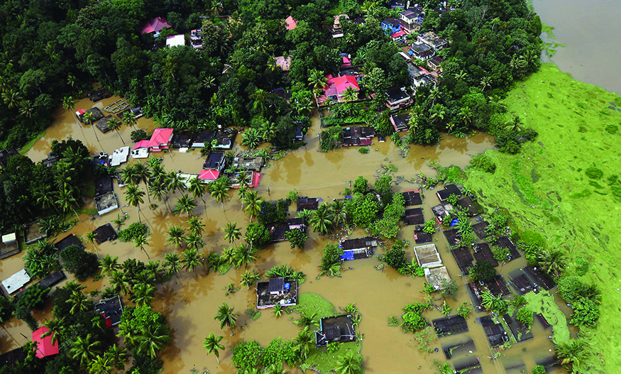


145
നാടറിയാം
കേരളത്തിലെ വിദ്്യയാഭ്യയാസപുരോ�ോഗതിിയുും മെച്ചപ്പെട്ട സാമൂൂഹിക-ഭൗതിക സാഹചര്യങ്ങളുും
ആധുനിക സാങ്കേതികവിദ്്യയുും ജനങ്ങൾ ഏർപ്പെടുുന്ന തൊ�ൊഴിിലുകളിിൽ മാറ്റങ്ങൾ
ഉണ്ടാക്കിി.
ആധുനിക
സാങ്കേതിക
വിദ്്യ കാർഷിക
-പര്പരാഗത തൊ�ൊഴിിൽ
മേഖലകളിിലുുണ്ടാക്കിിയ മാറ്റങ്ങളെക്കുറിച്ച്് അന്്വവേഷിച്ച്് കുകുറിപ്പ്് തയ്യാറാക്കൂ.
കേരളവും പ്രകൃതിദുരന്തങ്ങളും
കേരളത്തിന്റെ പ്രകൃതിിഭംഗിിയുും അനുകൂകൂലമായ കാലാവസ്ഥയുും ജനജീവിിതം
സുുഗമമാക്കുന്നുവെന്ന്്
നാം കണ്ടല്്ലലോലോ. എന്നാൽ ചിില സന്ദർഭങ്ങളിിൽ പ്രകൃതിദുുരന്തങ്ങളുും
പ്രകൃതിക്്ഷഷോഭങ്ങളുും ഉണ്ടാകാറുുണ്ട്്. പരിസ്ഥിിതിി ദുുർബലപ്രദേശങ്ങൾ ധാരാളമുുള്ള
ഭൂൂപ്രകൃതിിയാണ്് കേരളത്തിനുുള്ളത്്. മനുഷ്്യരുടെ ഇടപെടൽ മൂൂലമുുണ്ടാകുകുന്ന
പ്രതിിസന്ധിക
ൾ കൂടാതെ ചിില പ്രകൃതിദുുരന്തങ്ങളുും ജീവലോ�ോകത്തെ ഹാനികരമായിി
ബാധിിക്കുന്നുുണ്ട്്.
ചിിത്രങ്ങൾ നിിരീക്ഷിിക്കൂ.
പ്രകൃതിദുുരന്തങ്ങളുുമായിി ബന്ധപ്പെട്ട ചിിത്രങ്ങളാണ്് നൽകിിയിിരിിക്കുന്നത്്. ജീവനുും
സ്്വത്തിനുും പരിസ്ഥിിതിിക്്കുുംും അപായകരമായ പ്രകൃതിദുുരന്തങ്ങൾ ഏതൊ�ൊക്കെയാണ്്?
പട്ടിക
പൂൂർത്തിയാക്കൂ.
•
ചുുുഴലിിക്കാാറ്റ്്
•
കാാട്ടുുതീ
എന്താണ്് പ്രകൃതിദുുരന്തങ്ങൾ?
ജീവനുും സ്്വത്തിനുും പരിസ്ഥിിതിിക്്കുുംും അപായകരമായ പ്രകൃതിിപ്രതിിഭാസങ്ങളാണ്്
പ്രകൃതിദുുരന്തങ്ങൾ. ഇത്തരം പ്രകൃതിദുുരന്തങ്ങൾ മനുഷ്്യരെയുും മറ്റ് ജീവജാലങ്ങളെയുും
പ്രതികൂകൂലമായിി ബാധിിക്കുന്നുു. 2004 ൽ ഉണ്ടായ സുനാമിി കേരളത്തിൽ വലിിയ
കെടുുതികൾക്ക് കാരണമായിി. അതിനെക്കുറിച്ച്് മുുതിിർന്നവരോ�ോട്് ചോ�ോദിിച്ചറിിയൂൂ.
ഭൂപ്രകൃതിവിഭാഗം
തൊ�ൊഴിൽ
മലനാട്്
ഇടനാട്്
തീരപ്രദേശം
Page 42


146
സാമൂഹ്്യശാസ്ത്രം ക്ാസ് V
കവളപ്പാറ ഉരുുൾപൊ�ൊട്ടൽ (2019)
പെട്ടിിമുടിി ഉരുുൾപൊ�ൊട്ടൽ (2020)
2018 ൽ കേരളത്തിലുുണ്ടായ വലിിയ പ്രളയം, 2019 ൽ കവളപ്പാറയിിലുും 2020 ൽ
പെട്ടിിമുടിിയിിലുുമുുണ്ടായ ഉരുുൾപ്്പപൊട്ടലുകൾ എന്നിിവ അതത്് പ്രദേശങ്ങളിലെ
ജനജീവിിതം ദുസ്സഹമാക്കിിയിിരുന്നുു.
ദുരന്തനിവാരണവും ലഘൂകരണവും
വാർത്താതലക്കെട്ടുകളുടെ കൊ�ൊളാഷ്് നിിരീക്ഷിിക്കൂ.
ദുരന്തമുഖങ്ങളിൽ
കൈത്താങ്ങുമാായി സന്നദ്ധ
പ്രവർത്തകർ
നാടെങ്്ങുും ദുുരിതാശ്്വാസ
വിഭവസമാഹരണംം
ശുചീകരണ പ്രവർത്തനങ്ങളിൽ
യുവജനങ്ങൾ മുന്നിട്ിറങ്ങി:
പ്രളയബാാധിതർ വീടുകളിലേക്ക്
കടലിന്റെ മക്കൾ
ബോ�ോട്ടുകളുമാായി
ദുരന്തമുഖത്ത്്
സർക്ാരിന്റെ വിവിധ
വകുുപ്പുുകളുുടെ ഏകോ�ോപിപ്ിച്ചുുളള
പ്രവർത്തനങ്ങൾ
Page 43


147
നാടറിയാം
2018 ലെ പ്രളയത്തെ കേരളം എങ്ങനെയാണ്് നേരിട്ടതെന്ന്്
സൂചിപ്പിിക്കുന്ന വാർത്താ
കൊ�ൊളാഷാണ്് നൽകിിയിട്ടുുളളത്്.
ദുുരിിതാശ്്വവാസ – രക്ഷാപ്രവർത്തനങ്ങൾക്കായിി കേരളം ഒന്നിച്ചുു
. സർക്കാരിിന്റെ വിിവിിധ
വകുപ്പുകൾ, സന്നദ്ധസംഘടനകൾ എന്നിിവയുും യുുവജനങ്ങൾ, വ്യയാപാരികൾ,
മത്സസ്യത്്തതൊഴിിലാളികൾ എന്നിിവരുും ഒത്്തതൊരുുമയോ�ോടെ പ്രവർത്തിച്ചതിിന്റെ ഫലമായിി
ഈ വലിിയ പ്രകൃതിദുുരന്തത്തിന്റെ തീവ്രത കുകുറയ്കകുവാൻ സാധിച്ചുു.
നിങ്ങളുടെ പ്രദേശത്ത്് ദുുരിിതാശ്്വവാസ പ്രവർത്തനങ്ങളിിൽ പങ്കാളിിയായവർ ഉണ്്ടടോ?
അവരുടെ അനുുഭവങ്ങൾ അന്്വവേഷിിച്ചറിിയൂൂ.
ദുുരന്തനിിവാരണത്തിനുും ലഘൂകരണത്തിനുുമായിി എന്്തതൊക്കെ മുുന്്നനൊരുക്കങ്ങൾ
നടത്്താാം?
മുുന്്നനൊരുക്കങ്ങൾ
മുുന്്നനൊരുക്കങ്ങൾ
ദുരന്തപൂർവ നിവാരണ
പ്രവർ്തനം
ദുരന്തസമയത്തെ രക്ാ
പ്രവർ്തനം
ദുരന്താനന്തര
പ്രവർ്തനം
ആധുനിക സാങ്കേതിക
വിദ്്യയുടെ സഹായത്്തതോടെ
ചിില ദുുരന്തങ്ങൾ മുുൻകൂട്ടിി
അറിിയുക.
രക്ഷാപ്രവർത്തനത്തിന്്
ആവശ്യമായ സംവിിധാനം
ഒരുുക്കുക.
ദുുരന്ത ബാധിിതരെ
പുനരധിിവസിപ്പിിക്കുക.
ദുുരന്ത സാധ്യതാ
മേഖലകളിിൽ
മുുന്നറിിയിപ്പുകൾ നൽകിി
ബോ�ോധവത്കരണത്തിനുും
ജനങ്ങളെ മാറ്റിപ്പാർപ്പിിക്കു
ന്നതിനുു
മുുള്ള നടപടികൾ
സ്്വവീകരിിക്കുക.
ദുുരിിതാശ്്വവാസ ക്യയാമ്പുകൾ
സ്ഥാപിച്ച്് ഭക്ഷണം,
വസ്ത്രം, താമസ സൗകര്യം,
ചികിി
ത്സ എന്നിിവ
ലഭ്യമാക്കുന്നതിനുു
ള്ള
ആസൂൂത്രണം നടത്തുക.
ഭാവിിയിിൽ ഉണ്ടാകാൻ
സാധ്യതയുുള്ള ദുുരന്ത
സാഹചര്യങ്ങളെ
പ്രതിരോ�ോധിിക്കുന്നതിനുു
ള്ള
നടപടികൾ സ്്വവീകരിിക്കുക.
പ്രകൃതിദുരന്തങ്ങളുടെ നിവാരണ്തിനും ലഘൂകരണ്തിനുമായി
പ്രവർ്തിക്ുന്ന സർക്ാർ വകുപ്പുകളും സംവിധാനങ്ങളും
കേ�രള റവന്യൂൂ� ദുുുരന്തനിിവാാരണ വകുുപ്പ്്്
സംസ്ഥാാന
ദുുുരന്തനിിവാാരണ അതോ�ോറിിറ്റിിി
ജില്ലാ ദുുരന്തനിിവാരണ അതോ�ോറിറ്റിി
ദുുരന്ത സാധ്യതാ അപഗ്രഥന സെ
ൽ
ലാന്റ്് & ഡിിസാസ്റ്റർ മാനേജ്മെന്റ്് ഇൻസ്റ്റിറ്റ്യൂട്ട്്
പ്രകൃതിിദുുുരന്തനിിവാാരണവുംം� ദുുരിിതാാശ്വാ�സ പ്രവർത്തനങ്ങളുുമാായിിി ബന്ധപ്പെ�ട്ട
ചിിിത്രങ്ങൾ ശേ�ഖരിിച്ച്്് ടീച്ചറുുടെ സഹാായത്തോ�ോടെെ ഡിിജിിറ്റൽ ആൽബം
തയ്യാാറാാക്കുുക.
Page 44
148
സാമൂഹ്്യശാസ്ത്രം ക്ാസ് V
നാംം വസിിക്കുുന്ന ഭൂൂപ്രദേശത്തെĹ വൈൈവിധ്യയവുംംc മണ്ണുംംc ജലവുംംc കാാലാവസ്ഥയുംംc വിളകളും�ം
നമ്മുുടെെ ജീവിതത്തെĹ എങ്ങനെ�യെ�
ല്ലാം� സ്വാ�ധീീനിക്കുുന്നുവെ�ന്ന്് തിരിിച്ചറിിഞ്ഞിില്ലേ�. ഈ
മണ്ണിന്റെെź സമൃദ്ധിിയുംംc തെ�ളി
ിനീരും�ം വരാനിരിിക്കുുന്ന തലമുറകൾക്കുുകൂടി കരുുതിവയ്ക്കേേƩണ്ട
ചുുമതല നമുുക്കുുണ്ട്. അതിനാാൽ പ്രകൃതിയുുടെെ സന്തുുലിതാവസ്ഥയ്ക്ക് കോ�ോട്ടംം തട്ടാതെ�യു
ുള്ള
ജീവിതരീതിക്കുംംc വികസനത്തി
ിനുമാണ്് നാംം മുൻഗണന നൽകേ�ണ്ടത്.
തുടർപ്രവർത്തനങ്ങൾ
1. കേ�രളത്തിലെ� മൂന്ന് ഭൂൂപ്രകൃതിവിഭാഗങ്ങളിലെ�യുംംc കാാർഷിികവിിളകൾ,
മണ്ണിന
ങ്ങൾ, തൊ�ൊ
ഴിലുകൾ തുടങ്ങിയ വിവരങ്ങൾ ഉൾപ്പെടുത്തി ചുമർപത്രിക
തയ്യാറാക്കൂ.
2. നിങ്ങളുടെെ സ്കൂൂൾ പ്രദേശത്തെĹ മണ്ണിന്റെെź സവിിശേ�ഷതകൾ 'മണ്ണ് ആപ്പ്'
ലൂടെ കണ്ടെത്തുക
. സ്കൂളിൽ കൃഷി ചെയ്ാവുന്ന വിളകൾ ആപ്പിൽ നിന്്നുും
തിരഞ്ഞെട
ുക്കുക
. കാർഷിക ക്ലബ്ബിന്റെ ആഭിമുഖ്്യത്തിൽ 'മണ്ണ് ആപ്പ്' ലെ
നിർദേശങ്ങളുടെ സഹായത്്തതോടുകൂടി മണ്ണിന്റെ
ഫലപുഷ്ി വർധിപ്പിച്ച്ിച്ച്
നിങ്ങളുടെ ഉച്ചഭക്ഷണത്തിന് ആവശ്്യമായ പച്ചക്കറി ഉൽപാദിപ്പിക്കൂ.
3. ‘കേ�രളത്തിലെ� ഭൂൂപ്രകൃതിയുംംc ജനജീീവിതവുംംc’ എന്ന വിഷയ
ത്തെĹ
അടിസ്ഥാനമാക്കി സെ
മിനാർ സംഘടിപ്പിക്കുക.
•
ഓരോ�ോ ഭൂൂപ്രകൃതിവിഭാഗത്തിലെ�യുംംc മണ്ണ്, ജലംം, വിളകൾ, തൊ�ൊഴി
ിലുകൾ
എന്നിവ ഉൾപ്പെടുത്തി വിവരങ്ങൾ ശേഖരിക്കുക
.
4. നിങ്ങളുടെ നാട്ടിലെ
കാർഷികമേഖ
ല നേരിടുന്ന പ്രശ്നങ്ങളെക്കുറിച്്ചുും
അവയുടെ പരിഹാരമാർഗങ്ങളും അവിടത്തെ
കർഷകര
ുമായി ചർച്ച ചെയ്്
റിപ്്പപോർട്ട് തയ്യാറാക്കുക
.
5. കേരള ദുരന്തനിവാരണ
അതോ�ോറിറ്റിയുടെ ഔദ്യോഗിക വെബ്സൈ
റ്്
സന്ദർശിച്ച് അതിന്റെ പ്രവർത്തനങ്ങൾ മനസ്ിലാക്കുക
.